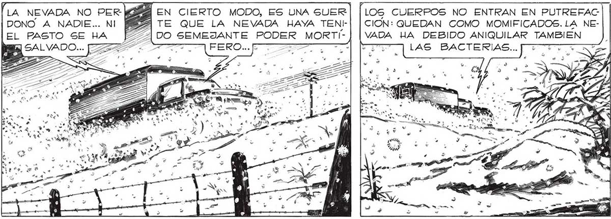
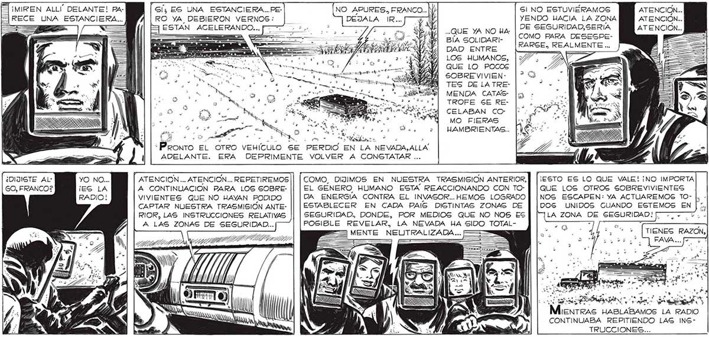

LA NEVADA NO PER [394 EN CIERTO MODO, ES UNA SUER | [LOS CUERPOS NO ENTRAN EN PUTREFAC DONO A NADIE... NI PA TE QUE LA NEVADA HAYA TENI-| | CION: QUEDAN COMO MOMIFICADOS.LA NEEL PASTO SE HA [Z27DO SEMEJANTE PODER MORTÍ-] [VADA HA DEBIDO ANIQUILAR TAMBIEN E SALVADO... 37% < ATT FEROE TARA A TT] LAS BACTERIAS... Sreuimos AVANZANDO SIN MAYORES INCIDENTES. E HIZO RUTINA ENCONTRAR A CADA TANTO AlLGÚN VEHICULO DETENIDO O MEDIO VOLCADO, TODOS CON ALGUNA DESOLADORA CARGA DE MUERTE... ¡MIREN ALLÍ DELANTE! Pa- Gs ES UNA ESTANCIERA...PE- , , MN Gl NO ESTUVIÉRAMOS ATENCION... RECE UNA ESTANCIERA... RO YA DEBIERON VERNOS: DEJALA IR... YENDO HACIA LA ZONA ATENCION... : é == ESTAN ACELERANDO... —— 3, . - Y DE SEGURIDAD, SERIA ) - y ho y y qu ..QUE YA NO HA; _ : 3 08 9 Hl e COMO PARA DESESPENA DAD ENTRE RARSE.,, REALMENTE ES LOS HUMANOS, QUE LO POCOS SOBRE VIVIEN-: TES DE LA TREMENDA CATASTROFE SE RECELABAN COMO FIERAS | | dl : HAMBRIENTAS.. se ¿> so. pi y . 0% iia > ¿Penas EL OTRO VEHÍCULO SE PERDIO EN LA NEVADA, ALLA ADELANTE. ERA DEPRIMENTE VOLVER A CONSTATAR ... ¿DIJISTE Al- a ATENCION... ATENCION... REPETIREMOS || | COMO, DIJIMOS EN NUESTRA TRASMISION ANTERIOR, || [¡esTO ES LO QUE VALE! ¡NO IMPORTA GO, FRANCO? ¡ A CONTINUACION PARA LOS GOBRE- || | EL GÉNERO HUMANO ESTA REACCIONANDO CON TO- | |que LOS OTROS SOBREVIVIENTES VIVIENTES QUE NO HAYAN PODIDO DA ENERGIA CONTRA EL INVASOR... HEMOS LOGRADO | [NOS ESCAPEN: YA ACTUAREMOS TO- |, CAPTAR NUESTRA TRASMISIÓN ANTE- ESTABLECER EN CADA PAIS DISTINTAS ZONAS DE DOGS UNIDOS CUANDO ESTEMOS EN 12 RIOR, LAS INSTRUCCIONES RELATIVAS SEGURIDAD, DONDE, POR MEDIOS QUE NO NOS ES |] |]LA ZONA : A LAS ZONAS DE SEGURIDAD... POSIBLE REVELAR, LA NEVADA HA SIDO TOTAL- : ES MENTE NEUTRALIZADA... IENTRAS HABLABAMOS LA RADIO CONTINUABA REPITIENDO LAS INSTRUCCIONES...

